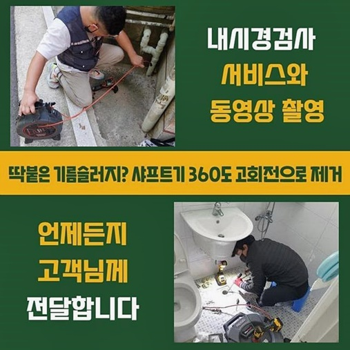
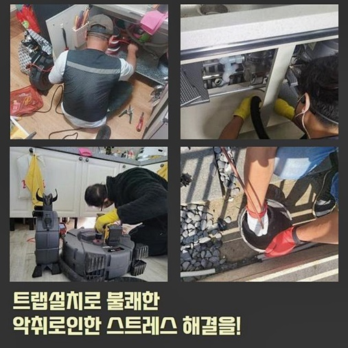
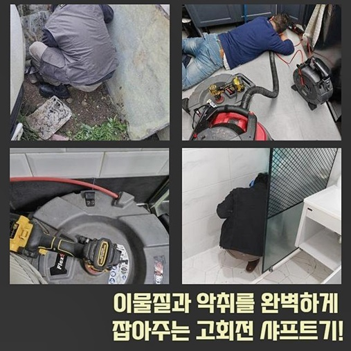
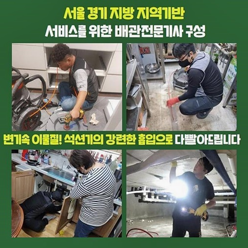
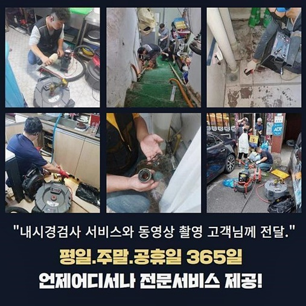
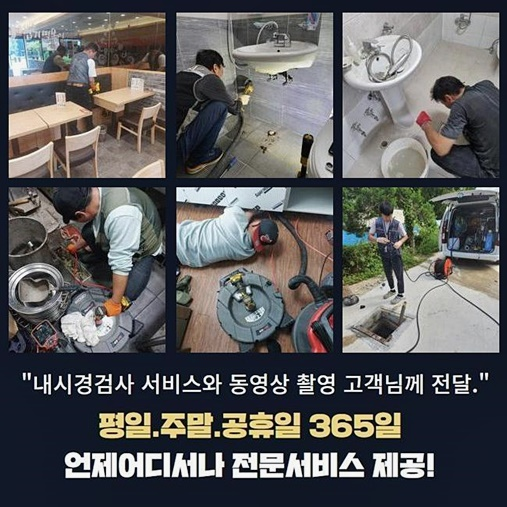

🏠 안산 부곡동변기배관막힘 사이동 하수구뚫어주는곳 누수공사
용인시 처인구 배관막힘 전문 시공 후기

📋 작업 개요
- 위치: 용인시 처인구, 수원시 영통구, 화성시 동탄
- 서비스 유형: 배관막힘, 누수수리, 고압세척, 내시경점검
- 작업 일시:
- 업체명: 하수구수사대 (010-5615-2118)
🔍 문제 상황
안산 부곡동변기배관막힘 사이동 하수구뚫어주는곳 누수공사
인사 올리겠습니다 의뢰자의 편리를 저해하는 배수장애를 조속하고 빈틈없게 바로 잡는 전문가인데요
지금부터 생활 중에 다양한 곳에서 생겨나는 문제들을 보면서 도움될만한 내용을 말씀드릴게요
무슨이유로 통수장애들이 생겨나는걸까요?
이것과 관련해 저희전문진이 안내하는 내용의 글로 적어보았어요
저희전문진이 찾아뵈었던 고객의 경우 물들이 안빠질때 대개 가벼운 문제로 생각하시어 펄펄 끓고있는 물들을 쏟아내 증세를 없앨 목적으로 노력하시는데요
기름으로 인해 야기된 증상임을 인지한 상태에서 실시했지만
노력과 달리 잠시동안엔 흘러가다가 같은 증상으로 막혀버리고 역류들이 생겨난것이죠
그리하여 스스로는 역부족이구나 생각하셨던 고객은 적당한 문제들을 바로 잡는 저희전문진을 불러주셨으며 저희의경우엔 신속히 불편들을 바로 잡아드릴것을 약속드렸어요
의뢰자의 요청에따라 1시간 내에 도달했는데요
하수도로 내려가지 않는걸 목격하고 즉각 주름호스를 탈착시키고 내부문제들을 점검해주었습니다
초입부터 굳게된 기름때와 이물을 넘어 하수도의 입구부분에 솟구친 하수들은 깊숙한 부분마저 점검해야 될 필요가 있다는걸 알게해주었어요

🔎 원인 분석
💡 전문가 진단: 정밀 진단 장비를 사용하여 슬러지의 고착 여부를 판명하고 타격/세척 작업을 실시했습니다.
그 다음으론 강한 흡입능력을 수행하는 석션장비로 안쪽의 잔해를 빨아당겼습니다
잔여물들이 빠져나왔으나 그 양상을 확인하니 통수오류의 주원인으로 보일만큼의 양들이 아니였습니다
관찰하고서 저희의경우엔 더 깊은 곳에 문제들이 존재하는것으로 추측하고서배수관을 육안으로 확인하게끔 해주는 내시경장치를 운용했죠
안쪽으로 내시경장치를 진입하여문제들의 원인과 어느구간에 장애가 자리하고있는지 파악해보았죠
해당 과정은 원인 파악에 있어서만 중요한것이 아닌 작업후의 테스트를 위한 때에도 중요하게 쓰입니다
하수구 막힘 고민을 시정하고자 한다면, 적절한 기기들을 갖추고있는 전문가를 불러야하죠
저희의 전문가는 타 업체들에서 해결하지 못한 장소로부터도 찾아주고 계십니다
때때로 경제적 지출로 인하여 가벼운 자가조치들에 의지하시는 의뢰인분도 있으세요
물론 금액도 중요하겠으나 배수관 오류의 재발요소들을 고려해야하죠
피해가 거듭되면 접촉지점 자체가 약해지면서 물들이 새는것처럼 더 큰 고민을 발생시키게 만듭니다
이러한 까닭에 간단하게 해결이 될 수 있는지 내시경으로 정확하게 살피고서 수리수순에 몰입하는게 첫번째인데 이럼으로써 효과가 뛰어나고 재발하지않고 깨끗히 뚫는 작업이 이뤄진답니다
저희의경우엔 집에 있는 통수오류 사안과 밀접한 지식들과 해결능력을 마련하고있는 전문가인데요

🔧 작업 과정
여러분들의 거주지를 위생적이고 청결하게 지내도록 노력을 기울여 고객슬로건을 제공하는데요
결함들이 발생했다면 맘편히 저희들에게 상담을 진행해보세요!
내방하여 여러분들의 집을 깨끗히 만들어드리고 이전의 생활로 되돌려놓을것을 장담합니다
내시경으로 안쪽까지 확인하니 기름때로 범벅이 되어있던 것으로 파악되었어요
크기자체가 컸기에 석션도구로 해결할 수 없었던 연유를 파악할 수 있었어요
내측에 존재하는 큰 잔존물을 없애려면 샤프트기기라 불리우는 기기들을 운용시켜야 했습니다
장치를 써서 잔여물질을 타격하여 탈락시키고 흡입기로 청소해야해요
돌아가는 머리쪽의 노커들이 고착물을 쉽게 탈착시키고 분쇄해, 배수관을 군더더기 없이 유지시켜주는 고마운 녀석입니다
내부 상황을 할 때 이물질 분쇄를 멈춘 다음 확인해보았더니 샤프트 머리쪽 사슬부에는 다양한 오염원이 덕지덕지인 상태였어요
이로인해 이물질의 누적상태가 가볍지않음을 반증하고 청소를 꼼꼼하게 진행시킬것을 의미해요
반복적으로 내시경장치로 내부 상황을 체크하고 이물들이 슬러지화 된 많다라는 걸 보고 분쇄 현 상태를 수행했습니다
석션장비로 음식물 이물들을 계속하여 빨아주면서 제거시키고 내측을 청결하게 정리하였습니다
더군다나 단단한 오염물들이 상당했기에 현 상태를 꼼꼼히 진행했죠
이것처럼 하수구 막힘 문제들을 시정하는 저희 업체에서는, 막히게 만드는 이물들이 잠잠해질때까지 계속해서 뚫는 지금의 위치를 진행시켰어요
내시경장치로 내부의 상태가 본래의 모습을 되찾은걸 확인했습니다
밖으로 나와 모여진 잔해가 그걸 보여줬죠
이와같이 많은 양이 있는 상태였으면 막힘증세가 사라지지않아요
때문에 오염원을 빈틈없이 없애주는게 필요했고 일방적으로 석션장비로만 해결해주는건 잠깐동안만 효과를 발휘하게 되고 단기간에 증세를 불러일으키죠
해결된것을 내시경장비로 체크했음에도 불구하고 제대로 해결이되었는지 수돗물을 받은 뒤 배수테스트과정을 이어갔는데요
해당시점에 배수관 물문제가 발생되고 있진않나 세심하게 진단했고 체크해보았더니 이상현상없이 하수들의 통수들이 제대로 이뤄졌는데요


✅ 작업 완료
저희의 전문가들은 물빠짐 오류에 관한 이유를 자세히 진단해드리고 의뢰자의 집에 적절한 해결책을 수행한답니다
지속적으로 똑같은 하수구 막힘 결함들이 다시금 생기지않게끔 문제의 배관들을 철저하게 정비했죠
하수구 내시경 렌즈를 사용해 청소과정들과 세척하고 난 다음의 검수과정들도 의뢰인분이 이해하시게끔 도와드렸어요
이것처럼 어려운 하수도가 이상이 생겨버린 상황에 직면했을 시 즉각 저희들에게 말씀해주시기 바라요
저희들은 여러분들의 문제들을 빠르게 없애도록 모든 전문성과 경험들을 동원할 준비를 하고있어요!



⚠️ 하수구 배관 막힘 예방 및 관리 가이드
- ✅ 머리카락, 비닐, 물티슈 등 물에 분해되지 않는 이물질은 절대 흘려보내지 마세요.
- ✅ 기름기 많은 식기는 설거지 전 키친타올로 먼저 기름때를 닦아내세요.
- ✅ 주기적으로 배수구에 뜨거운 물을 가득 부어주어 유지방 고착을 방지하세요.
- ✅ 작업 후 1년 이내 재발 시 무상 A/S 보증 서비스를 제공합니다.
💡 핵심 정리
- 확실한 장비 작업(내시경 점검 및 샤프트 스케일링)으로 원인을 뿌리 뽑습니다.
- 작업 후 1년 이내에 동일한 부위 재발 시 100% 무상 A/S 서비스를 보장합니다.
- 서울 · 경기 · 인천 전 지역에 24시간 언제든 긴급 출동할 수 있도록 항시 대기 중입니다.
❓ 자주 묻는 질문 (FAQ)
🚨 용인시 처인구 배관막힘 문제로 고민이신가요?
정확한 원인 진단과 확실한 시공으로 재발 없는 해결을 약속드립니다.
24시간 긴급 출동 | 서울 · 경기 · 인천 전지역 | 1년 내 재발 시 무상 A/S